Physical Project
Cultural Hall Lighting Project
A reusable event-lighting rig built from 48 extra-long LED fairy light strands, printed spools, a circular support ring, and a suspended power platform.
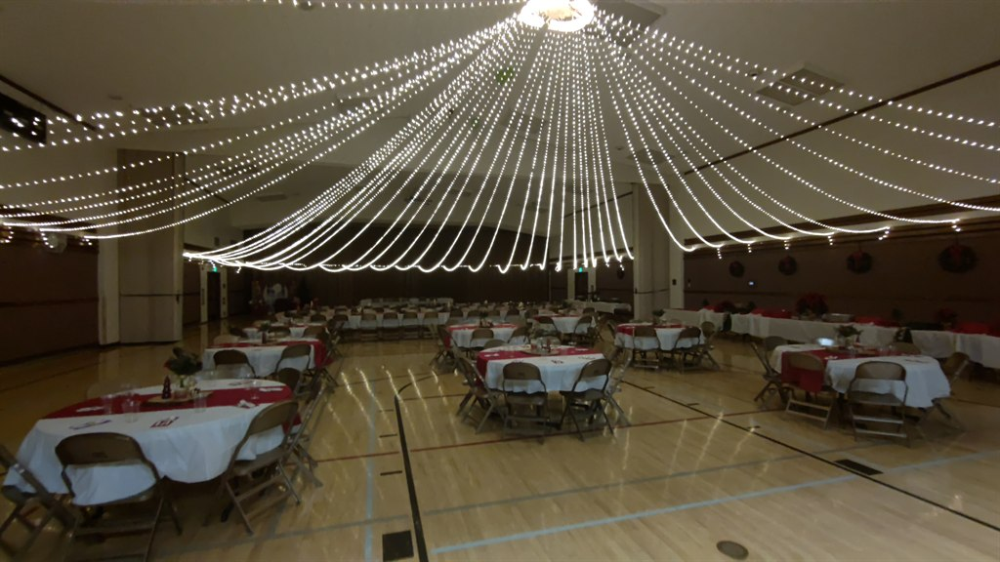
Overview
Detailed build guidance
How the full system is designed
This system contains 48 12v 100 foot "fairy light" LED strands. Each strand has 3 lights per foot for a total of 300 lights on each strand, and draws 380 milliAmps. If you want to keep it to a 15 amp draw, you would reduce the number of strands to 39. At 48, it draws 18.24 amps, so you would need a 20 amp circuit and 20 amp power cord.
Each strand is wound onto a 3d printed spool. 12 spools are mounted on a 90 degree arc of flexible piping, using PEX in this build. Four arcs are joined with pipe tees and clamped together with hose clamps to form a circle, then mounted to a center plywood platform. The platform has 48 pigtails in 4 banks of 12, ready to be connected after the needed amount of lighting has been stretched out.
The spools have cutout arcs to let heat dissipate, since the unused portion of each strand can stay tightly wrapped while still illuminated and can get noticeably warm.
Any variations you see in the photos reflect later improvements. Some pictures still show the earlier 100W supply and daisy-chained distribution blocks. After testing, the build moved to a 250W supply and a 6-header distribution block so the four lighting headers run in parallel, keeping each branch around 4.6 amps instead of pushing the full 18.2 amps through the first block.
Another change was moving from plastic tees to metal tees. The exact hardware can vary, but the overall design principles stay the same.
Another reinforcement change was adding two 3-foot lengths of 3/8-inch threaded rod to strengthen the crossbeams. One rod stays full length, and the other is cut into two shorter sections to fill out the other half of the cross.
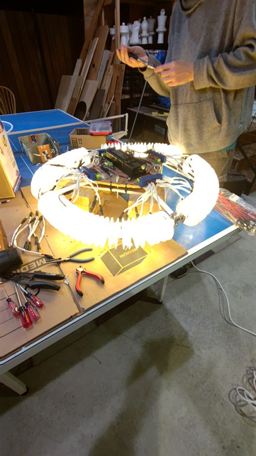
At A Glance
Key build numbers
Parts
Main materials and hardware
Electrical
- 12V power supply rated for 20.8 amps
- 48 male 5.5 x 2.1 mm pigtails
- Four 12-header distribution blocks
- One 6-header distribution block
- 50-foot 20A power cord
- 48 fairy-light strands with matching female connectors
Platform And Ring
- Two 15-inch by 15-inch plywood panels
- Flexible 1/2-inch PEX for the ring arcs
- Rigid 3/4-inch tube for supports
- Two 3-foot lengths of 3/8-inch threaded rod, with one full piece and one rod cut into two sections for crossbeam reinforcement
- Four 1/2-inch metal PEX barb tees
- Four pigtail retention blocks
- Twelve small hose clamps
- Forty-eight printed spools and sixty spacers
Rigging
- Four eye bolts with washers and nuts
- Vinyl-coated wire
- Heavy-duty carabiners and quick links
- 50-pound pulley
- 100 feet of quality rope
- Cable ties, clamps, and small hardware for strain relief
Printable Parts
Electrical System
Power distribution and cable management
The later version of the build uses a 250W supply and a six-header distribution block so the four twelve-port blocks run in parallel rather than pushing the full current through one chained path.
The pigtails are taped for a cleaner finish and restrained with printed retention blocks so the spool cables cannot yank loose from the power blocks during setup.
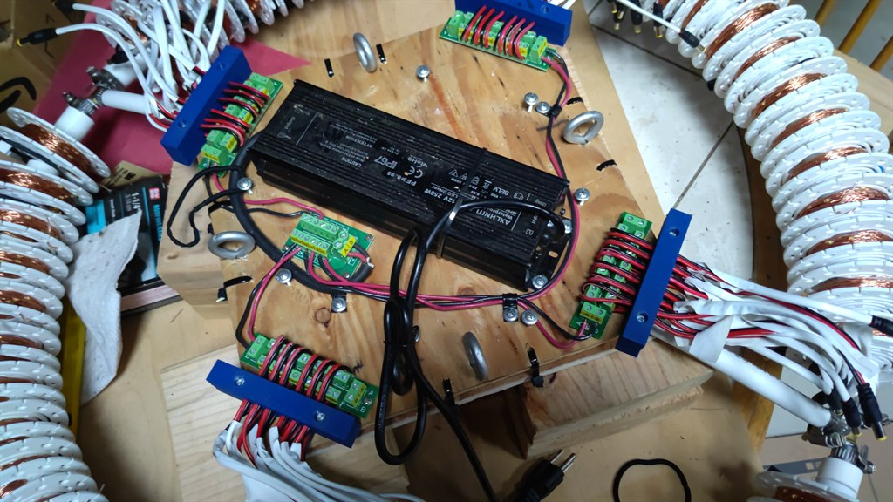
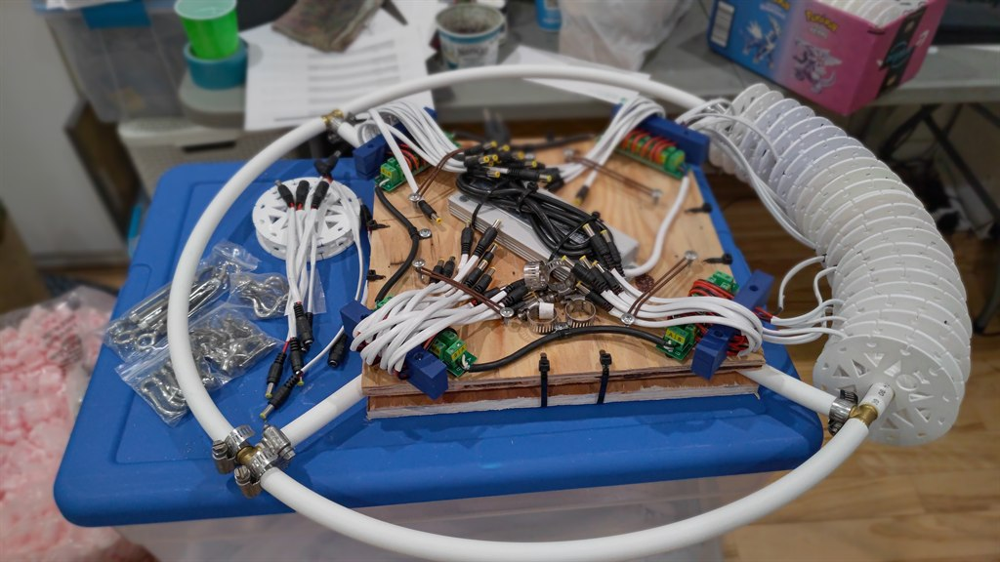
Platform Assembly
Sandwiching the center support
The center platform is made from two plywood squares with the ring supports trapped between them. Cable-tie holes in the bottom panel hold the flattened and overlapped support arms in place before the top panel is tied on.
A later improvement was adding two 3-foot, 3/8-inch threaded rods to strengthen the crossbeams. One rod remains full length, while the second rod is cut into two shorter pieces to reinforce the remaining half of the cross.
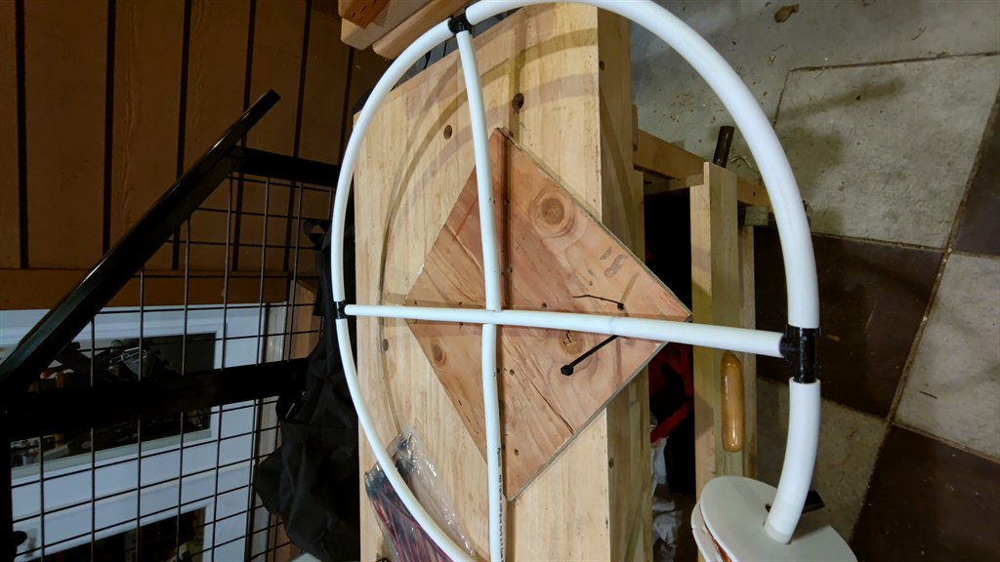
Spools And Spacers
Printed parts that make setup repeatable
Every strand is transferred from its shipping card onto a printed spool, with a clip glued to the side to hold the connector. The spool vents help shed heat when long unused sections remain wrapped and illuminated.
The guide also recommends using a drill-driven jig to wind the spools efficiently without overstressing the wire if something binds. See the video demo.
That same drill brush setup can also be used after an event to roll the strands back onto the spools after an event.
The printed part files are available here: spool, spool clip, spacer, and pigtail retention block.
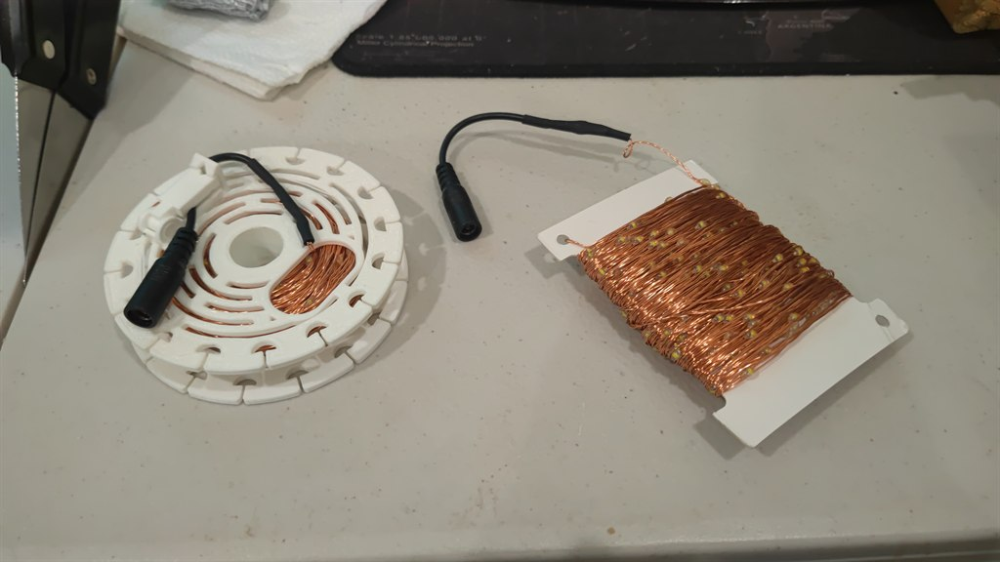
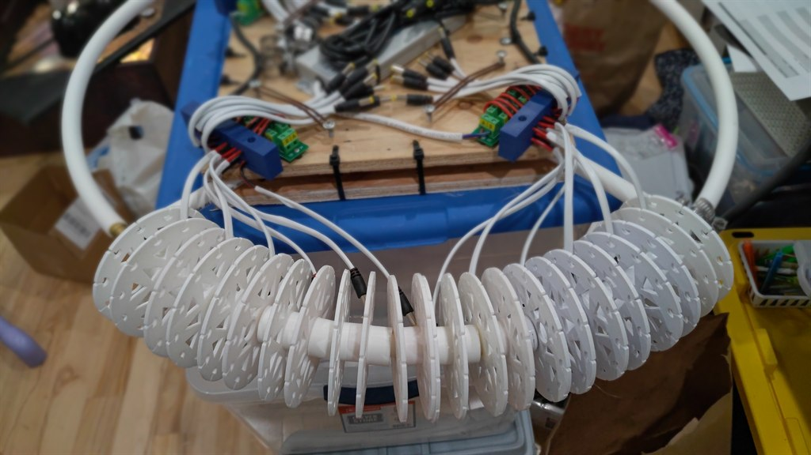

Rigging
Suspending the ring safely
Four eye bolts pass through the platform sandwich and connect to a simple suspension rig made from coated wire, crimps, carabiners, and quick links. A pulley and rope allow the full ring to be raised once it is centered on the floor.
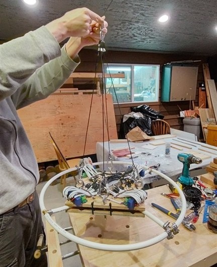
Installation
Deploying the lights in the room
Once the pulley is hung, the rig can be staged on a table so the spools turn freely while each strand is walked out to the wall or to a suspended nylon line. The original notes recommend leaving a little slack and avoiding over-tension at the far-end anchor points.
For halls without enough built-in attachment points, the strands can be clipped to nylon support lines stretched across the room.
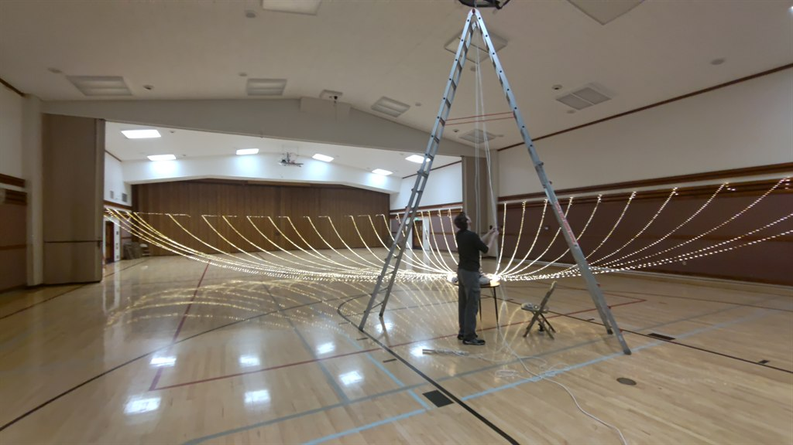
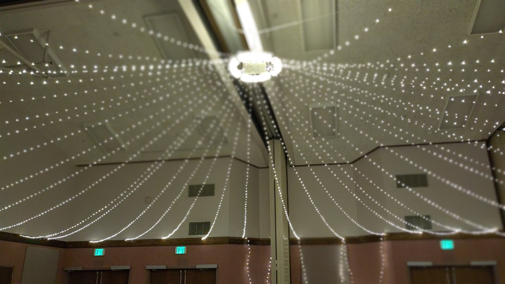
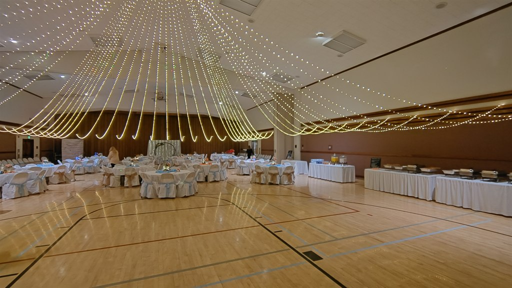